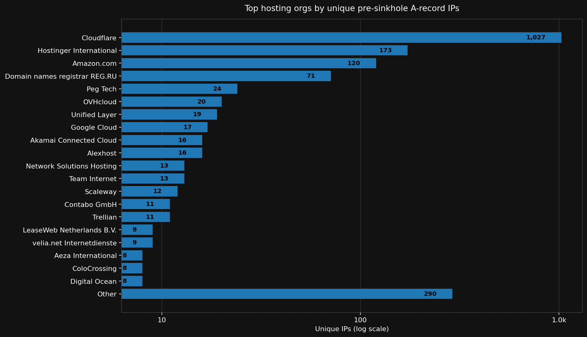
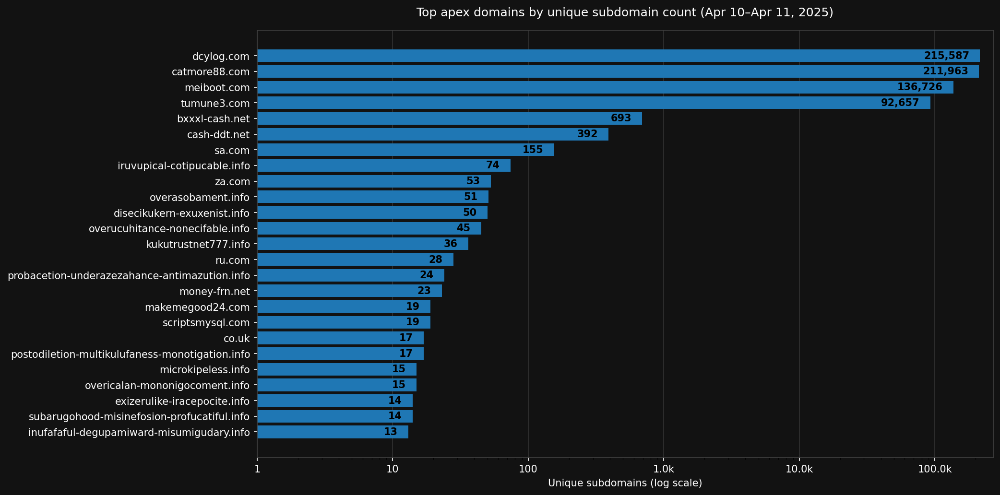
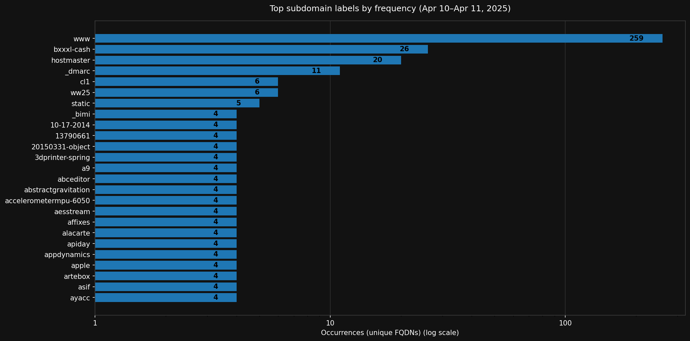

Summary: DNS sinkholing is usually treated as the end point of an abuse campaign: a moment when malicious domains are neutralized and infrastructure disappears from view. This post argues that sinkholing instead creates an analytical boundary. While it disrupts ongoing harm, it also freezes DNS configuration at the moment of intervention, preserving a structured record of how abuse infrastructure was organized beforehand. Using passive DNS alone, I examine sinkholing activity at scale and show that takedowns occur in concentrated bursts rather than as continuous clean-up. A detailed analysis of the April 2025 Badbox 2.0 takedown demonstrates how pre-takedown hosting choices, nameserver reuse, and large-scale programmatic subdomain generation remain visible after intervention. Treated this way, sinkholes are not just defensive tools, but post-action artifacts that make abuse infrastructure briefly legible.
When people speak about DNS sinkholes, they usually consider it an endpoint. A malicious domain is identified, control is transferred by changing the DNS records, and further harm is therefore prevented by redirecting traffic into infrastructure operated by law enforcement, security firms, registrars, or other trusted third parties. From a defensive perspective, this is success: the domain no longer serves its original purpose.
Over the past year, while working with large collections of sinkholed domains, I started to realize that this framing misses something important. Sinkholing doesn’t make infrastructure disappear. It freezes it. Once a domain is sinkholed, the surrounding DNS artefacts can still be found. Hosting choices, nameserver configurations, and historical resolution patterns remain visible through passive DNS, even though the domain itself is no longer actively used for abuse.
This post starts from that observation. Rather than treating sinkholed domains as a conclusion, it treats them as an entry point for analysis. By looking at sinkhole activity at scale, using passive DNS alone, it becomes possible to recover signals about how abuse infrastructure was organised before it was taken down.
What Sinkholes Leave Behind
The use of DNS sinkholes is a defensive intervention that changes where a domain resolves. Instead of pointing to infrastructure controlled by an attacker, the domain’s DNS records are modified so that traffic is redirected to servers operated by law enforcement, registrars, security firms, or other trusted third parties. This is typically done through registrar cooperation, registry action, or legal process, and is intended to immediately disrupt ongoing harm. For example, devices that have been made part of a botnet now no longer communicate with the Command and Control (C2) server, but instead check in with the sinkhole (and thereby providing defenders with insight on the size and infections of the botnet).
Operationally, sinkholing is effective as it interrupts large-scale abuse campaigns with relatively low friction. From a defensive standpoint, this is usually where the story ends: the domain has been neutralized and no longer poses an immediate threat. From an intelligence perspective, however, sinkholing does not quite erase infrastructure. Historical DNS records, nameserver delegations, hosting relationships, and resolution patterns remain observable through passive DNS. In that sense, a sinkhole marks the moment an abuse operation is disrupted while preserving a detailed record of how that operation was organized up to that point.
This dynamic makes sinkholes unusually valuable as post-action artifacts. They create a relatively clean temporal boundary between “before” and “after” takedown without relying on malware telemetry, victim reporting, or other sensitive sources. Unlike live infrastructure, sinkholed domains usually no longer adapt, rotate providers, or deliberately obfuscate their configuration. What remains is stable enough to analyze, compare, and contextualize across time.
Passive DNS as the Primary Lens
The analysis in this post relies exclusively on passive DNS. All structure, clustering, and temporal patterns are derived from historical DNS observations: when domains resolved, how they resolved, where they were hosted, and which nameserver configurations they used before and after takedown. Sinkholing appears here not as a label, but as a change in DNS behaviour that creates a stable observation point.
To bootstrap the analysis, I started from a limited set of known sinkhole indicators drawn from Abuse.ch’s SinkDB and a prior academic study by Alowaisheq et al.. These sources function only as seeds for collecting passive DNS observations. To avoid redistributing operational sinkhole coverage, domain-level results are aggregated or anonymized unless the domains have already appeared in public reporting.
From these sinkhole indicators, historical resolution data was used to reconstruct how abuse infrastructure was organized prior to sinkholing: which IP space it used, which nameservers it relied on, how long those configurations persisted, and how they overlapped with other domains. In many cases, sinkholing was preceded by a long and stable DNS history.
External sources therefore function only as starting points rather than authorities. Intelligence value comes from correlating DNS behaviour across many events, rather than relying on a single seed. This highlights an important asymmetry: while commercial threat intelligence vendors often sell lists of sinkholed or seized domains as finished products, passive DNS makes it possible to independently reconstruct much of the same context. Because passive DNS is driven by queries from affected systems, it preserves many of the indicators later packaged as commercial intelligence.
Identifying Sinkholing Bursts
To understand the temporal structure of sinkholing activity, all observed sinkhole transitions were aggregated into a daily time series. Figure 1 shows a total of 22.3M domains being sinkholed in 2025, separated by day and derived exclusively from passive DNS observations. A logarithmic scale is used on the y-axis to make both background activity and extreme spikes visible within the same view.
The resulting distribution is highly uneven. While many days exhibit a relatively stable baseline of takedown activity, this background is repeatedly interrupted by sharp spikes in which the number of sinkholed domains increases by one or multiple orders of magnitude within a very short time window. Such abrupt changes are difficult to explain through organic domain churn alone. Instead, they strongly suggest coordinated takedown efforts affecting large numbers of domains simultaneously.
Figure 1: Count of daily domain takedowns in 2025
Building on this observation, the time series was further examined using Kleinberg’s burst detection model. Rather than relying on fixed thresholds or manual spike selection, the model treats sinkholing as a sequence of individual events and looks for time periods where these events suddenly occur much more frequently than usual. This makes it possible to distinguish short, concentrated takedown actions from longer stretches of consistently elevated activity, without relying on fixed thresholds or absolute volume levels.
Applied to the daily sinkholing counts, the model identified thirteen ‘burst periods’ embedded within an otherwise noisy background. These bursts are temporally compact, most of them only lasting one day, and account for a disproportionate share of all observed sinkholing events in 2025. Importantly, the detected bursts align closely with the visually apparent spikes in Figure 1, but provide a formal mechanism for defining their start and end points without post-hoc interpretation.
One burst stands out in early April. On April 10th, the daily count of newly sinkholed domains jumps by more than two orders of magnitude relative to the surrounding baseline. This spike corresponds temporally to the public takedown of the Badbox 2.0 botnet, which is reported to have affected 10 million Android users by turning their devices into residential proxies. BadBox 2.0 relied on a large number of malicious (sub)domains for C2 and the updating of infrastructure. While the Public Service Announcement does not mention a takedown date, the takedowns occurring on this date match the IoCs documented by for example Human Security and Google’s lawsuit from July 2025. Even though the analysis here does not depend on malware telemetry or vendor attribution, the timing and scale of the spike strongly suggest that a single, coordinated enforcement action was responsible for the sudden collapse of a large portion of this domain infrastructure. The next section goes into more detail on the findings of the spike on April 10th.
Crucially, though, this burst is not an isolated anomaly. While this burst in particular stands out in size, other periods identified by the Kleinberg model display similar characteristics: abrupt onset, high internal density of sinkholing events, and a sharp turn to baseline once the action concludes. Taken together these bursts provide strong evidence that sinkholing activity is dominated not by continuous, incremental clean-up, but by episodic interventions that dismantle entire segments of abuse infrastructure at once. It also suggests that observations originating from passive DNS data can be used to point out large-scale takedowns led by law enforcement agencies.
These burst boundaries serve as the analytical backbone for the remainder of this post. Rather than treating all sinkholed domains as part of a single undifferentiated population, subsequent analysis is structured around these discrete takedown windows. By grouping domains by burst, it becomes possible to ask more precise questions about infrastructure reuse, nameserver configuration, and hosting choices within and across enforcement actions.
A Worked Example: The Badbox 2.0 Burst
The largest burst identified in 2025 occurs on April 10th and dwarfs all other sinkholing activity observed that year. On that single day, more than five million (sub)domains transitioned to sinkhole infrastructure, representing possibly one of the largest takedowns of 2025. This section uses that burst as a worked example to illustrate what passive DNS can reveal once sinkholing is treated as the beginning of analysis rather than its conclusion.
Pre-takedown Infrastructure
Before looking at how Badbox domains expanded, it is useful to step back and ask a more basic question: where did this infrastucture live prior to takedown? Sinkholing fundamentally alters the hosting picture by redirecting DNS resolution away from attacker-controlled infrastructure. As a result, post-takedown DNS observations tend to collapse onto a small number of well-known providers, most notably Cloudflare. While this is operationally significant, it obscures the hosting decisions that attackers made before intervention.
To recover that earlier hosting layer, I reconstructed A-record resolution for all registered domains sinkholed during the 10-11 April burst, restricting observations to those occurring strictly before the first sinkhole transition for each domain. For each domain, all pre-sinkhole IP addresses were mapped to hosting organizations using MaxMind-derived IP-to-Organization data. Subdomains may, of course, resolve to infrastructure different from that of the registered domain. However, to keep data analysis manageable within a reasonable time, this is a trade-off I made for now. Figure 2 shows the resulting distribution, ranked by the number of unique IP addresses observed per organization.
Looking at the data, it becomes clear that Cloudflare accounts for the largest number of unique IP addresses. This is logical and likely related to Cloudflare’s free protection program. As I will discuss in the next section, Cloudflare is also a great obfuscation mechanism for hiding actual hosting infrastructure. More revealing, however, are the hosting providers immediately below. Hostinger-controlled IP space stands out as the major pre-takedown hoster, followed by Amazon (the hoster of the Badbox C2 domains) and other commercial hosting providers, cloud platforms, and smaller infrastructure operators. While known Bulletproof Hosters, like Aeza International, occur in the list, it shows that there is significant fragmentation. This is to be expected, as the domains in this burst are not only Badbox-related, however, it still shows a degree of popularity among hosters.

Figure 2: Observed pre-takedown infrastructure for domains taken down during the April 10–11 burst.One additional pattern is worth noting at the DNS delegation layer. Prior to sinkholing, as mentioned before and shown in Figure 2, many of the domains in this burst relied on Cloudflare for authoritative DNS, often reusing identical pairs of Cloudflare nameservers across otherwise unrelated registered domains. These NS pairs reoccur across dozens to hundreds of domains and persist over time, independent of domain naming conventions. While Cloudflare’s NS record naming only uses 51 male and 50 female names as a precaution against collisions in registration leading to ‘only’ 2550 unique combinations, the degree of NS pair reuse in the Badbox burst is significant enough to make a remark about and reinforces the picture of interchangeable domains embedded within shared infrastructure networks.
| Cloudflare NS pair | Domains observed | First seen | Last seen | Example domains |
|---|---|---|---|---|
| donna.ns.cloudflare.com / tim.ns.cloudflare.com | 144 | 2024-02 | 2024-08 | 1ap-notjesera.best, ajykrarabize.best, alpoeipq.best |
| augustus.ns.cloudflare.com / laura.ns.cloudflare.com | 129 | 2024-01 | 2025-04 | adgang-til-kamera.online, adslfreesm.space, altexcoin.site |
| annalise.ns.cloudflare.com / quentin.ns.cloudflare.com | 43 | 2024-03 | 2024-08 | alaotteeheal.life, aneoghciastre.life |
| rajeev.ns.cloudflare.com / yolanda.ns.cloudflare.com | 35 | 2024-07 | 2024-08 | afcaus.org, caracter.co, changepartners.us |
| cory.ns.cloudflare.com / serena.ns.cloudflare.com | 22 | 2024-05 | 2025-02 | arrestchargesevidence.shop, breakingresponseupdate.site |
Table 1: Example: Reused Cloudflare NS Pairs (Pre-Takedown)
The value of these NS-pair observations does not lie in the individual nameservers themselves, but in their reuse across many otherwise unrelated registered domains. While Cloudflare’s naming scheme is finite by design, the concentration of specific pairs within a single takedown burst points to shared operational control rather than incidental overlap. Still, it is worth noting that this is not a decisive pivot and merely a pattern that stood out during the analysis.
Extreme Subdomain Expansion
A first indication that this burst reflects coordinated infrastructure rather than anything else comes from the internal composition of the domains involved. Figure 2 shows the most common registered domains that were observed among the domains that were taken down during the April 10 burst, counting 3128 domains in total. The distribution is highly skewed. While many domains appear only once or a handful of times, a small set of registered domains expands to tens or hundreds of thousands of distinct subdomains that are taken down. This level of growth is not consistent with benign usage patterns like web hosting, content delivery, or normal service hosting. Instead, it strongly suggests automated generation at scale. The four registered domains that stand out the most are also among the earlier-mentioned IoCs documented by Human Security and Google’s lawsuit.

Figure 3: Registered domains ranked by number of unique subdomains during the April 10–11 burst.Programmatic Subdomain Generation
The structure of the subdomains themselves further reinforces this interpretation. Figure 3 shows the most frequent subdomain labels observed across all unique fully qualified domain names during the same window. Rather than reflecting meaningful hostnames or service identifiers, the distribution is dominated by repetitive labels. While the list starts with labels that occur anywhere, like www, the list contains a great amount of labels that only occur for dcylog[.]com, catmore88[.].com, meiboot[.]com, and tumune3[.]com. Examples of such labels include cppexamplearray3, spestframe9lahedefwfi, and springsecurityoauthvkontaktegrailsplugin. Of course, there are more than four main C2 domains for Badbox, these just stand out due to the number of subdomains taken down.

Figure 4: Frequency of subdomain labels observed during the same burst window (log scale).Hence, in particular, the long tail of labels with a low frequency higher than one are of interest here. The key observation is that these labels are reused across different domains publicly tied to Badbox 2.0 C2. This reuse suggests that domain names were interchangeable within a larger infrastructure, rather than independently managed assets.
Using Subdomain Patterns to Discover Additional Infrastructure
This regularity makes the subdomain structure analytically valuable. Because the same labels are reused across multiple domains, they can be used as pivots to identify related infrastructure beyond the initial seed set.
Starting from domains already known to be sinkholed, it becomes an option to search passive DNS for other domains that exibit the same subdomain generation patterns, even if those domains were not explicitly listed in takedown announcements or public indicators. One important sidenote on that tactic, however, is that passive DNS is created from queries that passed recursive DNS resolvers and may therefore be subject to data poisoning. When discovering new registered domains based on subdomain labels, this is important due to the possibility of Pseudo-Random Subdomain Attacks (PRSD), which is a type of DDoS attack. If the subdomain labels originate from a specific list and are used in PRSD attacks, they may result in false positives when analyzing passive DNS data.
In any case, the subdomain labels can act as fingerprints of the underlying infrastructure logic. Domains that share the same label distributions on this scale are likely to have been operated as part of the same system.
$ grep geequery-spring-boot-auto-configure fqdn.unique.txt
geequery-spring-boot-auto-configure.catmore88.com
geequery-spring-boot-auto-configure.dcylog.com
geequery-spring-boot-auto-configure.meiboot.com
geequery-spring-boot-auto-configure.tumune3.com
By taking the list of possible subdomain labels, querying passive DNS for all registered domains that are observed to have these subdomains, and counting which registered domains have a high number of hits, nearly all C2 domains included in attachment A of the Google lawsuit documentation can be reproduced. This indicates that this is a pivot that could potentially be used to monitor for signals about new Badbox infrastructure that has not been taken down yet, especially under the assumption that the standard subdomains are used to facilitate modularity in its C2 infrastructure.
Making Sense of the Whole
Taken together, the observations in this worked example describe a form of infrastructure that is deliberately loose, repetitive, and resilient to loss. The pre-takedown hosting data shows that domains were spread across multiple commercial providers rather than concentrated in a single enclave. The nameserver layer shows extensive reuse of identical Cloudflare NS pairs across many otherwise unrelated registered domains. The subdomain structure shows automated expansion that treats individual domains as interchangeable rather than distinct assets.
None of these signals are decisive on their own. Hosting concentration alone could reflect convenience or pricing. Nameserver reuse could be explained by platform defaults. Subdomain repetition could occur in benign large-scale deployments. What makes the Badbox burst analytically useful is that these patterns appear together, within the same narrow time window, across thousands of domains that were neutralized simultaneously.
The sinkholing event itself is what makes this combination observable. Once the takedown occurs, infrastructure stops adapting. Domains no longer rotate providers, change nameservers, or alter naming schemes. Passive DNS therefore captures a snapshot of infrastructure just before disruption, rather than a moving target. In this case, that snapshot reveals a system optimized for scale and replaceability rather than longevity or stealth.
Importantly, the analysis does not rely on inferring operator intent or malware behaviour. It stays at the level of observable configuration choices: where domains resolved, how they were delegated, and how naming patterns were reused. The Badbox burst functions here as a constrained environment in which these choices can be examined without the usual confounders introduced by long campaign lifetimes or gradual infrastructure churn.
At the same time, the example also highlights the boundaries of this approach. Post-takedown DNS data collapses onto defensive infrastructure and cannot be used to infer hosting beyond the point of intervention. Registered-domain analysis necessarily smooths over subdomain-level variation. And the observations are specific to a single, unusually large takedown event. The goal of this section is therefore not to generalize, but to show what becomes visible when sinkhole data is excavated and analyzed.
Sinkholes and Analytical Boundaries
This post started from a simple reframing. DNS sinkholes are usually treated as endpoints: moments where abuse is stopped and infrastructure disappears from view. What the analysis above shows is that sinkholing does something slightly different. It captures infrastructure at the moment of intervention, creating a boundary that separates live indicators from a stable historical record.
Using passive DNS alone, that boundary can be exploited to reconstruct how abuse infrastructure was organised immediately before disruption. In the Badbox 2.0 case, this made it possible to observe hosting distribution, repeated reuse of nameserver delegations, and large-scale programmatic subdomain expansion without relying on malware telemetry, victim data, or commercial intelligence. None of these signals are ‘new’ by themselves. However, their value lies in how they align within a single takedown window.
Importantly, this is not an argument that sinkholing reveals everything, nor that passive DNS can replace other investigative methods. The approach has clear limits. It depends on observation density, collapses once infrastructure is redirected to defensive providers, and says little about operator intent or downstream harm. What it does offer is a way to treat takedowns not as the end of analysis, but as moments when infrastructure briefly becomes legible.
Seen this way, sinkholes are not just defensive tools. They are analytical artifacts. Each large-scale takedown leaves behind a partial but structured record of how abuse operations scale, reuse components, and distribute risk. Reading that record does not require privileged access. It requires treating disruption as an opportunity to look backward, rather than moving on.
The broader implication is modest but useful. As coordinated takedowns become more common, especially against domain-heavy abuse ecosystems, passive DNS provides a way to study infrastructure at the exact moment it stops changing. When captured at scale, it can tell us how abuse systems were built to function, and what remains visible once pressure is applied.
In that sense, sinkholing does not end the story. It marks the point where a different kind of analysis can begin.
Indicators of Compromise
For those interested, a published list of domains sinkholed in 2025 (the same ones used in this post) can be found here.